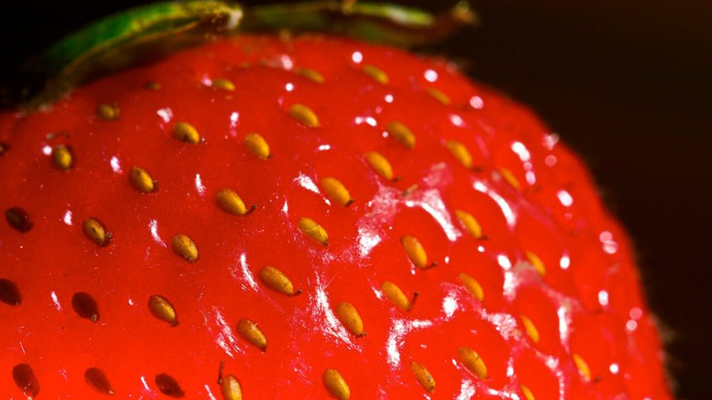

ဒါပေမယ့် ဒီလိုပြောတာလဲ အတိအကျတော့ မမှန်ပါဘူးတဲ့။ တကယ်က ကျွန်တော်တို့ အစေ့လို့ ထင်တဲ့ စတော်ဘယ်ရီသီးပေါ်က ဖြူဖြူ အစိလေးတွေဟာ တကယ်က အစေ့တွေ မဟုတ်ပါဘူးတဲ့။ အဲ့တာလေးတွေက စတော်ဘယ်ရီ သီးလေးတွေပါတဲ့။ အစေ့လေးတွေက အဲ့သည် အသီးလေးတွေထဲမှာ ရှိနေတာပါတဲ့။
ဒါဆို ကျွန်တော်တို့ စားနေတဲ့ နီနီရဲရဲ အရည်ရွှဲရွှဲ စတော်ဘယ်ရီ ကြီးက အသီးမဟုတ်လို့ ဘာကြီးလဲလို့ မမေးချင်ဘူးလား။
အဲ့သည် နီနီရဲရဲ အရည်ရွှဲရွှဲ စားချင်စရာကြီးက တကယ်တော့ စတော်ဘယ်ရီ အပွင့်ရဲ့ အောက်က ပွင့်ခံပါတဲ့ ခင်ဗျား။ အဲ့ဒီ ပွင့်ခံကြီးကြ ကြီးပြီး ဖေါင်းလာတာပဲ ဖြစ်ပါတယ်တဲ့။
စတော်ဘယ်ရီပွင့်ဟာ ဝတ်မှုန်ကူးတာ အောင်မြင်သွားရင် အခြားအသီးတွေလို အပွင့်ကနေ ကြီးလာပြီး အသီးဖြစ်သွားခြင်း မရှိပါဘူး။ ဒီအစား အသီးလေးတွေဟာ ခြောက်သွားပြီး အထဲမှာ အစေ့လေးတွေ ပါတဲ့ အသီးခြောက် သေးသေးလေးတွေ ဖြစ်သွားပါတယ်။ အဲ့တာတွေကတော့ ကျွန်တော်တို့ စတော်ဘယ်ရီရဲ့ အပြင်ဖက်က အခွံပေါ်မှာ မြင်ရတဲ့ အစေ့ သေးသေးလေးတွေပါပဲ။
ဝတ်မှုံအောင် သွားတဲ့အခါမှာ ပန်းပွင့်ရဲ့ အောက်က ပွင့်ခံ (အပွင့်နဲ့ အကိုင်းနဲ့ ကြားမှာ ရှိနေတဲ့ အစိတ်အပိုင်း) ဟာ တဖြည်းဖြည်း ဖောင်းပြီး ကြီးလာပါတယ်။ ဒီဟာက ကျွန်တော်တို့ စတော်ဘယ်ရီလို့ သိကြတဲ့ အရည်ရွှဲရွှဲ နီနီရဲရဲ အစိတ်အပိုင်း ဖြစ်လာတာပဲ ဖြစ်ပါတယ်။
ဒါဆို မေးစရာ ရှိတာက ဘာကြောင့် အခြား အသီးတွေမှာ အစေ့က အထဲမှာ ရှိနေပြီး စတော်ဘယ်ရီကျ အစေ့ပါတဲ့ အသီးခြောက် လေးတွေကို အခွံပေါ်မှာ တင်ထားရတာ ပါလဲ။
ဘာ့ကြောင့်ဆိုတာကို အခုထိတော့ သိပ္ပံ ပညာရှင်တွေ အနေနဲ့ ကျေနပ်လောက်တဲ့ အဖြေပေးနိုင်ခြင်း မရှိသေးပါဘူး။ ဒါပေမယ့် အနည်းအကျဉ်းတော့ ခန့်မှန်းခြေ အဖြေပေးနိုင်ပါတယ်။

ဥပမာ ပြောရရင် ထောပတ်သီး ပေါ့ဗျာ။ သူ့အသီးက အကြီးကြီး၊ အခွံကလဲ မာသေး ဆိုတော့ တော်ရုံ တိရိစ္ဆာန်တွေ မစားနိုင် ကြဘူး။ ဒါဆိုဘယ်လိုလုပ်ပြီး အစေ့တွေ ပြန့်သလဲ။ အဖြေကတော့ ဒီအသီးက မူလက အလွန်အင်မတန် ကြီးမားတဲ့ ဧရာမ အကောင်ကြီးတွေ စားပြီး အစေ့ကို ပြန့်ပွားစေတဲ့ နည်းလမ်းနဲ့ ပြန့်ပွားတာ ဖြစ်ပါတယ်။ ဒါပေမယ့် အဲ့လို ကြီးမားတဲ့ အသီးစား သတ္တဝါကြီးတွေ မျိုးတုံးသွားတော့ အခုဆို ထောပတ်သီးဟာ သူ့မျိုးဆက်တွေ ပြန့်ပွားနိုင်ဖို့ လူတွေရဲ့ စားသုံးမှုကို မှီခိုရတဲ့ အခြေအနေ ရောက်သွားပါတယ်။
နောက်ထပ် ဆင့်ကဲ့ဖြစ်စဉ် (evolution) အရ အပင်တွေ ရှာဖွေဖန်တီးတဲ့ နည်းလမ်းကတော့ အစေ့တွေ ဝေးနိုင်သရွေ့ ဝေးဝေး ရောက်အောင် ပြုလုပ်နိုင်တဲ့ နည်းလမ်းတွေပဲ ဖြစ်ပါတယ်။ ဒါ့ကြောင့် အချို့အပင်တွေရဲ့ အစေ့တွေဟာ လေမှာ ဝဲပျံနိုင်တဲ့ အမွှေးတွေ၊ အတောင်တွေ ပါတာဖြစ်ပြီး အချို့ အသီးနဲ့ အစေ့တွေမှာတော့ ရေမှာ ပေါ်နိုင်တဲ့ အခွံပွတွေ ပါတာ ဖြစ်ပါတယ်။
နောက်တစ်နည်းကတော့ အသီးကို တိရိစ္ဆာန်တွေ မစားအောင် ကာကွယ်တဲ့ နည်းလမ်း ဖြစ်ပါတယ်။ ဥပမာ Ginko အသီးဟာ အနံ အလွန် ဆိုးရွားတာမို့ ဘယ်အကောင်မှ မစားကြပါဘူး။
စတော်ဘယ်ရီ သီးကတော့ ပထမဆုံး နည်းလမ်းဖြစ်တဲ့ စားမယ့် တိရိစ္ဆာန်တွေကို ဆွဲဆောင်တဲ့ နည်းလမ်းကို ရွေးချယ်ခဲ့ပါတယ်။ ဒါ့ကြောင့် အသီး (အပွင့်ခံ) က အရည်ရွှဲ အရသာရှိ အရောင်စိုပြေပြီး တောက်တောက်ပြောပြောင် ဖြစ်နေရတာပါ။ ဒါပေမယ့် အစေ့တွေ ဘာကြောင့် အပြင်ရောက်နေ
နောက်တခါ စတော်ဘယ်ရီ စားရင် မသိတဲ့ သူတွေကို ဆရာလုပ်လို့ ရတာပေါ့ ခင်ဗျာ။